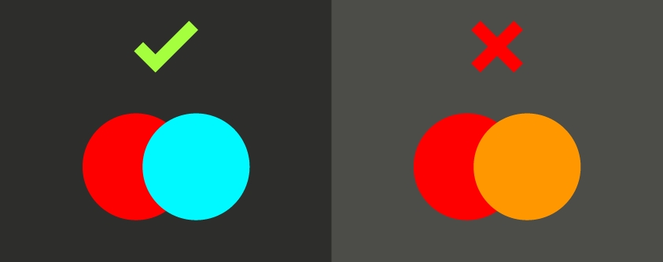

O Design Gráfico possui 12 princípios subjetivos que ajudam o Designer a desenvolver projetos mais belos e organizados. Veremos agora cada um deles.
O contraste é um dos princípios fundamentais do design e se baseia na combinação das cores conforme explicado no capítulo sobre a harmonia das cores. Contraste quer dizer que um elemento de determinada cor não pode se confundir com outros elementos, seja ao redor, seja em relação ao fundo. Por exemplo, se o fundo for escuro, um texto ou objeto sobre ele só terá contraste se tiver uma cor clara, o contraste de cores é dado com cores complementares diferentemente de cores análogas que tendem a se confundir.
Avance para ver mais.